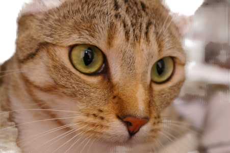
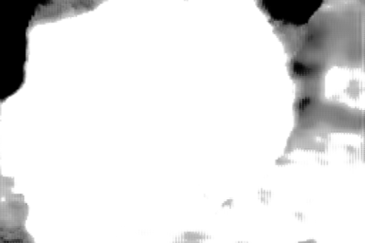
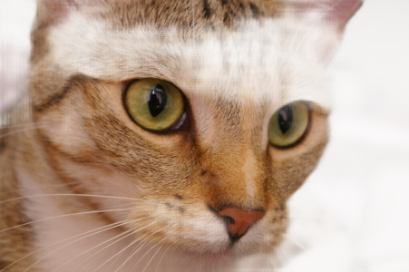
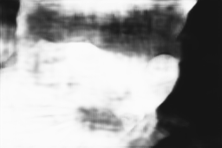
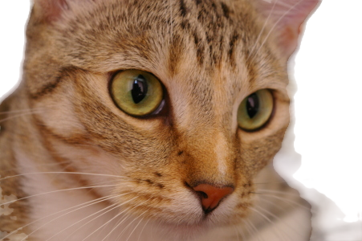
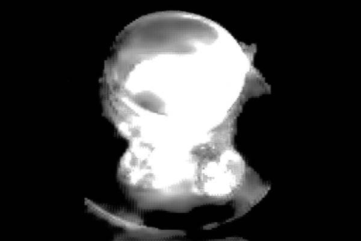
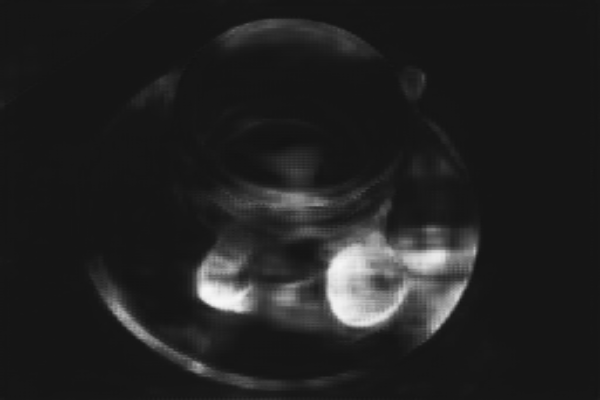
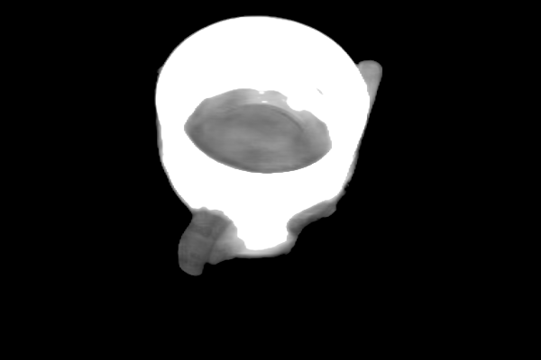

chelsea



Inspect mask




Inspect mask




segmentation-4f08186c-208d-4aa9-b368-88efd2db1c4a · 151.0.7922.34 · darwin/arm64









| Case | Result | Init ms | Mask call median ms | Observed Wasm MiB | Total wall ms |
|---|---|---|---|---|---|
| multiclass-CPU | result | 83.3 | 163.8 | 116.1 | 2640.4 |
| interactive-v2-CPU | result | 55.2 | 3248.6 | 440.8 | 49069.6 |
| selfie-CPU-no-webgl | Cannot read properties of undefined (reading 'activeTexture') | — | — | 18.2 | 82.0 |
| selfie-GPU | result | 70.9 | 26.5 | 18.2 | 3089.3 |
| selfie-CPU | result | 71.9 | 6.6 | 18.2 | 226.6 |
| interactive-v2-GPU | result | 57.1 | 424.2 | 377.1 | 31234.8 |
| selfie-CPU-nosimd | result | 76.0 | 15.0 | 18.2 | 357.5 |
| multiclass-GPU | result | 86.2 | 479.9 | 96.8 | 11644.8 |
Mask calls include inference, readback, validation and byte conversion. The additional interactive setImage() call time does not isolate encoder execution; see summary. GPU cases used the recorded renderer, which may be software SwiftShader. Wasm memory excludes JS, graphics and process overhead.
Full results and network attempts · Image hashes · Pinned inputs